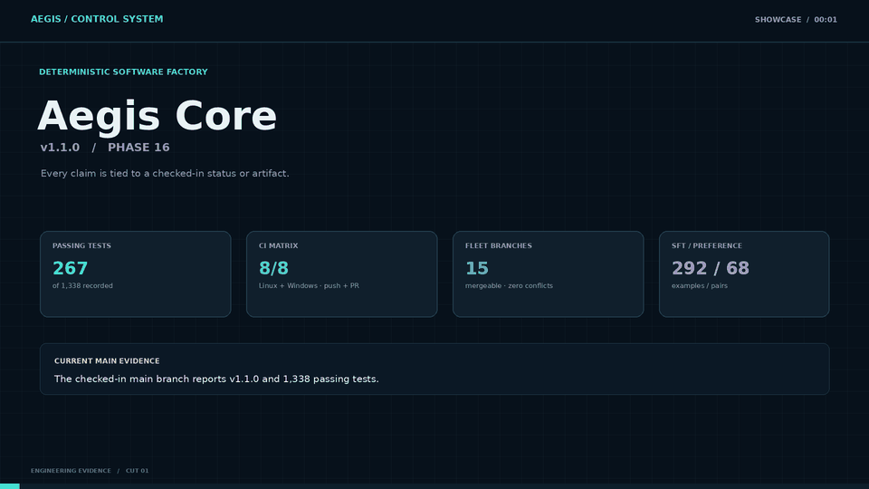

A
Deterministic software factory
Aegis Core ·
A verifiable tour of the current main branch. The numbers below are drawn from checked-in status, run artifacts, and release datasets.
OFFLINE · EVIDENCE-LINKED
Motion preview · GIF / MP4

Download 1080p MP4
showcase/preview.gifshowcase/aegis_demo.mp4System map
Interactive architecture
Choose a module to inspect its role, collected tests, and core entry point.
Engineering history
Verified test growth
passing testsLatest recorded:
Runtime profile
Hot path with bounded memory
Deterministic sampling retained a rare tail branch while aggregating repeated calls.
Candidate gate
Anti-cheat tournament · recorded task sample
A browser-only walkthrough of recorded candidate receipts.
Frontend invariant scans
Observed scan evidence
Verified repairs in delivery receipts
Replay & safety valve
Reproduce first, promote carefully
Replay receipts freeze the evidence needed to reproduce a failure. The world model remains observational when the checked-in report cannot establish the needed false-positive rate.
Fleet delivery
Audited delivery branches
Names and counts come from the checked-in fleet dashboard. Main-branch pollution is reported as zero.
Training release
Real distillation bundle
datasets/release_v15/manifest.json